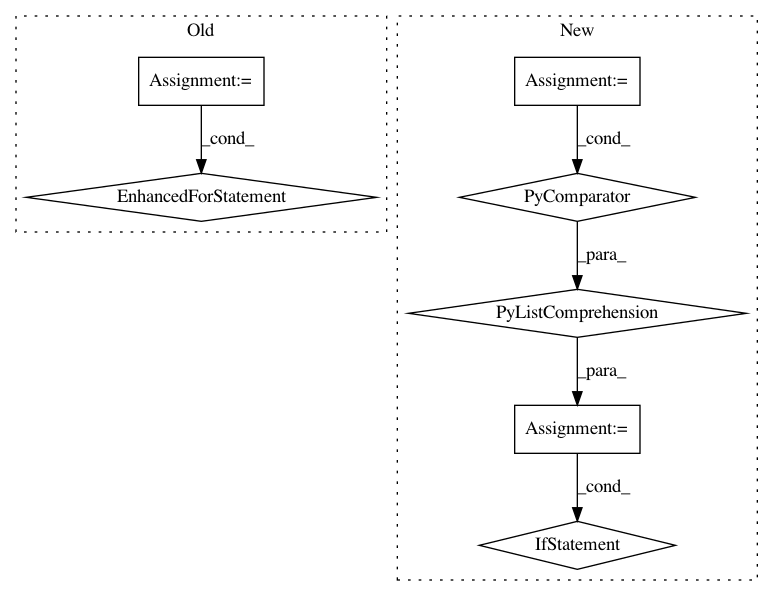

cc6085567559b008c831d07fcb7c1f53bea9a699,coremltools/converters/nnssa/frontend/tensorflow/load.py,,load,#Any#Any#,13
Before Change
ssa = graphdef_to_ssa(gd)
placeholder_shape = kwargs.get("placeholder_shape", {})
for k, v in placeholder_shape.items():
assert (k in ssa.functions["main"].graph)
ssa.functions["main"].graph[k].tfattr["_output_shapes"] = [v]
passes = [
delete_asserts, functionalize_loops, constant_propagation, cond_to_where,
remove_variable_nodes, fusedbatchnorm_rewrite, lstmblockcell_rewrite
]
After Change
placeholder_shape = kwargs.get("inputs", {})
if len(placeholder_shape) > 0:
graph = ssa.functions["main"].graph
required_plhd_nodes = [node for node in graph if
graph[node].op == "Placeholder"]
for name in required_plhd_nodes:
if name not in placeholder_shape:
raise ValueError("Shape of required input {} is not provided.".format(name))
graph[name].attr["_output_shapes"] = [placeholder_shape[name]]
passes = [
delete_asserts, functionalize_loops, constant_propagation,
cond_to_where, remove_variable_nodes, fusedbatchnorm_rewrite,
lstmblockcell_rewrite
In pattern: SUPERPATTERN
Frequency: 3
Non-data size: 7
Instances
Project Name: apple/coremltools
Commit Name: cc6085567559b008c831d07fcb7c1f53bea9a699
Time: 2019-08-30
Author: shuoxin_lin@apple.com
File Name: coremltools/converters/nnssa/frontend/tensorflow/load.py
Class Name:
Method Name: load
Project Name: CyberZHG/keras-bert
Commit Name: d55d201b303b4186670ada7c7ea462e0c481d6d6
Time: 2019-07-05
Author: 853842+CyberZHG@users.noreply.github.com
File Name: keras_bert/bert.py
Class Name:
Method Name: get_model
Project Name: apple/coremltools
Commit Name: d1e6e624ef891543c5bba32bb0a696d350714693
Time: 2019-08-20
Author: smq@apple.com
File Name: coremltools/converters/nnssa/coreml/shapes.py
Class Name:
Method Name: _squeeze